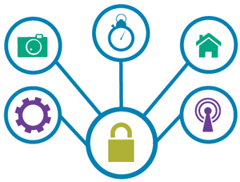

设备安全认证
概述
通过各种传感器，接入网络后的产品能够具有各种各样的新奇功能。但是，围绕着物联网产品的壮大，隐私与安全问题自然而然的又出现在了我们的面前。作为厂商，也不愿意自己的物联网设备轻而易举的被破解或者被山寨。作为消费者，没有人愿意别人能够看到自己办公室或家里的网络信息。

JUMA的IP和服务
设备安全认证内容：
- 设备注册机：设备注册机会记录每一个设备的ID。设备注册机生成一段保密的身份代码，烧入至设备非读写区域。云端会记录每个设备的ID和身份代码。之后，当我们需要对一台设备进行正版或山寨的身份验证的时候，可以检查设备的ID是否在库中，以及设备是否具有身份验证信息。
- 设备授权体系：每个用户有一个自己的ID。此外，云服务会给每个设备设置一个令牌。当用户使用设备时，需要向云服务申请令牌，云服务首先检查数据库，判断用户是否允许使用，若有权限，将令牌发给用户。当用户获得了令牌后，便可以操作设备了。令牌的传输过程是加密的。